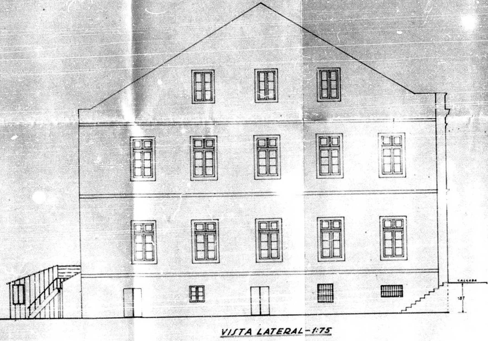

GORGS
O GRANDE ORIENTE DO RIO GRANDE DO SUL é uma associação civil de direito privado, sem fins lucrativos, destinada a promover a reunião de seus associados com vistas ao estudo e prática da doutrina e da filosofia da Maçonaria, com finalidades educativa, social e filantrópica.
Fundado em 14 de outubro de 1893, é a maior e mais antiga Potência Maçônica filiada à Confederação Maçônica do Brasil – COMAB – instituição da qual é um dos fundadores.
É integrante da Confederação Maçônica Interamericana – CMI – uma das principais confederações Maçônicas do mundo.
É integrante da Confederação Maçônica Interamericana – CMI – uma das principais confederações Maçônicas do mundo.
É membro efetivo da Conferência Mundial das Grandes Lojas Maçônicas Regulares, que congrega a Maçonaria regular de todo o mundo.
Integra a List of Lodges – Masonic, publicação norte-americana que refere as Potências Maçônicas Regulares do mundo.
Declarado de Utilidade Pública Municipal conforme a Lei N° 5946 de 24/09/1987
Declarado de Utilidade Pública Estadual conforme Ato de 14/05/1987 publicado no Diário Oficial de 18/05/1987
É uma Potência Maçônica independente, estando entre as maiores e mais influentes Instituições Maçônicas do mundo.
Suas sedes administrativas estão situadas em Porto Alegre, na rua Jerônimo Coelho n° 116 e na avenida Aureliano de Figueiredo Pinto n° 945.
Suas Lojas estão situadas em 121 cidades e utilizam em seus trabalhos oito ritos reconhecidos: Escocês Antigo e Aceito, York, Maçons Livres Antigos e Aceitos, Adonhiramita, Schroeder, Brasileiro, Emulação e Moderno (Francês).
Constituem princípios do Grande Oriente do Rio Grande do Sul:
a) liberdade de consciência;
b) concórdia, tolerância e reseito;
c) valorização das ideias humanitárias;
d) valorização do trabalho;
e) difusão do conhecimento útil e capaz de melhorar a sociedade;
f) culto à honra e rática constante da caridade;
g) austeridade e responsabilidade no cumprimento do dever;
h) liberdade, igualdade e fraternidade.
255
Lojas Simbólicas
8
Lojas de Pesquisa
0
Triângulo
HISTÓRIA DO GORGS
Grande Oriente do Rio Grande do Sul:
Uma história indissociável da história do RS
14 de outubro de 1893 é a data de fundação de uma Potência Maçônica independente e soberana: o Grande Oriente do Rio Grande do Sul. Mas não é apenas isso. Quando se faz referência a essa data, há um histórico anterior ligado a ela. E, posteriormente, confunde-se com a trajetória do próprio Estado do Rio Grande do Sul e do Brasil; uma trajetória de lutas, é verdade, mas, acima de tudo, de muita fraternidade e da busca incessante pela paz. Uma história contada através de atos corajosos de homens livres, sempre dispostos a pugnar pelos ideais maçônicos. E, assim, não apenas ficaram marcados de forma indelével na história do GORGS, mas ajudaram a escrevê-la com letras douradas.
Para compreender a necessidade da criação de uma Potência Maçônica neste torrão ao sul da América do Sul é preciso buscar os primórdios da Ordem Maçônica no Brasil.
Em 1743, D. João V decretou, sob pena de morte, a proibição das Lojas Maçônicas no reino português, o que, obviamente, valia para o Brasil, que era parte daquele reino. A repressão violenta aniquilou a incipiente Maçonaria portuguesa. Houve um interregno na perseguição aos Maçons no governo do Marquês do Pombal, ministro de D. José I (1750 – 1777), período em que a Ordem retomou força e vigor. Morto o rei D. José, Pombal foi deposto e exilado. Com a ascensão de D. Maria I ao trono, a intolerância recrudesceu. Isso se devia ao combate que a Maçonaria movia às monarquias absolutistas e à defesa que fazia do liberalismo.
Embora diversos relatos de atividades maçônicas anteriores, a primeira Loja regular no Brasil foi a “Reunião”, fundada no Rio de Janeiro em 1801. A “Cavaleiros da Luz”, de 1797, na Bahia, não reunia-se regularmente. Tampouco o “Areópago de Itambé”, em Pernambuco, embora nele se reunissem Maçons, a começar por seu fundador, o Padre Arruda Câmara.
Quando, em 1808, em razão da invasão de Portugal por Napoleão, o governo português transferiu-se de Lisboa para o Rio de Janeiro, havia várias Lojas maçônicas funcionando no Brasil. O príncipe regente D. João (futuro D. João VI), estadista tolerante, não perseguiu a Ordem. Porém, em razão da Revolução Pernambucana de 1817, liderada por Maçons, baixou alvará com força de lei, em 1818, proibindo sociedades secretas. Mesmo assim, reuniões maçônicas informais em casas particulares continuaram a acontecer.
Com o retorno de D. João VI e sua corte para Portugal em abril de 1821 – exigido pelas Cortes Gerais Extraordinárias e Constituintes, instituídas a partir da Revolução do Porto, que eclodira em 24 de agosto de 1820 – D. Pedro assumiu como príncipe regente do Brasil e acelerou o processo de emancipação, já em franca ascensão e liderado por Maçons. A Potência Maçônica pioneira na América lusitana foi o Grande Oriente Brasileiro (ou Brasílico), fundado em 1822 com o objetivo de promover a Independência.
Pedro, que tinha ideias liberais, foi conquistado pela Maçonaria. Iniciado, foi em pouco tempo guindado a Grão-Mestre. Em 25 de outubro de 1822 (portanto, pouco depois de declarada a Independência), D. Pedro determinou a suspensão dos trabalhos do Grande Oriente em razão da instabilidade política protagonizada pelos grupos liderados por José Bonifácio (defensor da Monarquia Constitucional) e Joaquim Gonçalves Ledo (partidário da adoção imediata da República). Somente após a abdicação do Imperador, em 1831, foram retomados os trabalhos maçônicos com a reinstalação da antiga Obediência. A essa altura, mesmo com a proibição das atividades, existiam diversos movimentos maçônicos pelo Brasil. Um exemplo disso era o Grande Oriente do Passeio, Obediência que está ligada ao início das atividades maçônicas do Rio Grande do Sul.
Ainda em 1831, sob os auspícios do Grande Oriente do Passeio, era fundada a Loja “Philantropia e Liberdade”, em Porto Alegre. Com o passar dos anos, outras Lojas foram sendo organizadas pelo Estado, que estava prestes a vivenciar os momentos definidores da identidade do povo gaúcho.
O Rio Grande do Sul esteve em permanente estado de guerra durante o século XIX: Guerra da Cisplatina (1825-1828), Revolução Farroupilha (1835-1836) e Guerra dos Farrapos (1836-1845), Guerra do Paraguai (1864-1870), Revolução Federalista (ou da Degola) 1893-1895. A população gaúcha foi devastada. Em 1883, as Obediências Maçônicas existentes se fundiram, formando o Grande Oriente do Brasil, congregando todas as Lojas do País. Na capital gaúcha, a Maçonaria passava por uma profunda crise. Em 1887, quando a Loja “Zur Eintracht” (de Carlos Von Kozeritz) adormeceu, apenas a Loja “Luz e Ordem” permaneceu firme. Entretanto, encaminhava-se tristemente para o mesmo destino.
Nos últimos anos do Império, surgiram na região três lideranças políticas antagônicas: o liberal Assis Brasil, o conservador Pinheiro Machado e o positivista Júlio de Castilhos. Os três se reuniram para fundar o Partido Republicano Rio-Grandense, que fazia oposição ao Partido Federalista do Rio Grande do Sul, fundado e liderado pelo liberal monarquista Gaspar Silveira Martins. Em 1889, proclamada a República, essas correntes entraram em um sangrento conflito. Em apenas dois anos, o Estado teve 18 governadores.
A proclamação de uma República revigorou as atividades da Maçonaria, mesmo em meio à barbárie dos combates da Revolução Federalista (e pré-revolução), entre os Chimangos de Júlio de Castilhos (republicanos) e os Maragatos de Silveira Martins (federalistas). Mas havia um problema que gerava crescente preocupação e descontentamento nos Maçons em quase todo o País: a centralização das Obediências Maçônicas sob o Grande Oriente do Brasil. Não é difícil imaginar as acaloradas discussões nas Lojas daquela época. Mesmo assim, com grande participação do Venerável-Mestre Luiz Afonso de Azambuja, a Loja “Luz e Ordem” conseguiu adquirir um Templo próprio. Ali, surgiriam novos tempos para a Maçonaria gaúcha. O local: rua Jerônimo Coelho número 4 – atualmente, Jerônimo Coelho número 116. Ou seja, o local onde a fundadora do GORGS “Luz e Ordem” instalou sua sede é ainda hoje a sede administrativa do GORGS, no centro de Porto Alegre.
No dia 10 de novembro de 1892, o Irmão João Damasceno Ferreira fez uma proposta na Loja “Progresso da Humanidade” (que havia sido regularizada um ano antes): que os Maçons deveriam intervir de modo a cessar os conflitos e apaziguar o Estado, convocando as demais Lojas para essa dura tarefa. A proposta, é claro, foi prontamente aceita. No dia 30 de novembro do mesmo ano, foi realizada a primeira Assembleia-Geral do Povo Maçônico, aos moldes do que deve ser uma verdadeira assembleia, com a participação de todos. Naquele dia, o orador da assembleia, João Damasceno Ferreira, informou que os Irmãos haviam sido convocados para tornarem-se propagandistas do espírito público para ordem e para paz, pois “a Maçonaria, assim como o Obelisco de Tebas”, sobreviveria incólume aos escombros que a sociedade vivia. E concluiu lamentando que as desavenças entre Irmãos seriam diretamente responsáveis pelo retardo da grandiosidade do Rio Grande.
Ainda discursaram no histórico encontro os Irmãos Thomaz Thompson Flores, João Pereira Maciel Sobrinho e Pedro Gonçalves Moacyr. Ali, foi definida uma comissão para encaminhar ofício ao GOB pedindo auxílio para controlar o caos social em que vivia a região Sul do Brasil, especialmente o Rio Grande do Sul, atingido em cheio pela Revolução Federalista.
Passados dois meses, já em fevereiro de 1893, nenhuma medida havia sido anunciada pelo poder central, apesar da insistência dos Maçons gaúchos. Para piorar, o primeiro semestre daquele ano foi marcado por inúmeras prisões de Maçons, a imensa maioria arbitrária e muitas delas claramente por retaliação, sem que houvesse sequer um posicionamento oficial da Obediência do Rio de Janeiro. Aqui, à luz da história, cabe destacar o trabalho do Irmão Frederico Augusto Gomes da Silva, sempre atuando em prol da liberdade dos detidos – da justiça, em resumo.
Em junho de 1893, chegou ao conhecimento do Irmão Múcio Teixeira a informação de que a Maçonaria paulista havia se declarado independente. No Brasil, todos os Maçons sofriam com o desinteresse do GOB. Pranchas de Oficinas da época relatam que seus anseios não eram sequer ouvidos; ao mesmo tempo, para que se tenha uma ideia do descaso com os brasileiros, pedidos de apoio financeiro de outros países eram repassados com tom de cobrança. Então os Irmãos Múcio Teixeira, Luiz Afonso de Azambuja e Maciel Sobrinho elaboraram um manifesto para ser lido em Loja.
Ainda naquele mês, o Venerável-Mestre da Loja “Progresso da Humanidade” levou ao conhecimento dos demais Obreiros a iniciativa dos paulistas, lendo o manifesto e sugerindo que era mais do que hora de os gaúchos seguirem o mesmo caminho: o da autonomia. No dia 17, foi nomeada a “Comissão Central”. Dias depois, em 6 de julho, foi aprovado o projeto de emancipação elaborado pela comissão, formada pelos Irmãos Domingos José Ferreira Bastos (Luz e Ordem), João Damasceno Ferreira (Progresso da Humanidade), Múcio Teixeira (Luz e Ordem), João Pereira Maciel Sobrinho (Luz e Ordem), Affonso Herbert (Luz e Progresso), Joaquim Marques da Cunha (Luz e Progresso) e Balduíno Röhrig (Luz e Progresso). O projeto objetivava viabilizar a separação da Maçonaria sul-rio-grandense, tendo como princípios:
1º – delegar poderes a uma comissão encarregada da direção de todos os trabalhos relativos ao movimento separatista;
2º – enviar emissários às Lojas do Estado com o fim de consultá-las sobre o assunto da separação;
3º – informar às Lojas que, se aderissem a ideia, o fariam em assembleia-geral e com votação nominal;
4º – independente do número de Lojas aderentes ao movimento separatista, constituir-se-ia um Grande Oriente independente, com sede em Porto Alegre, e ao qual ficariam jurisdicionadas as oficinas signatárias;
5º – até que fosse convocada a Constituinte Maçônica, as Lojas adotariam provisoriamente a constituição que já utilizavam no que se referisse à economia interna;
6º – o Grande Oriente do Rio Grande do Sul deveria formar uma federação com os demais Grandes Orientes independentes brasileiros. (Aqui vale um destaque: em 1893, já se previa o que viria a se tornar a Confederação Maçônica do Brasil – COMAB –, fundada quase um século depois.)
Na Sessão, as Lojas “Progresso da Humanidade”, “Luz e Ordem” e “Luz e Progresso” declararam parecer favorável à emancipação e marcaram para outubro duas sessões: uma preparatória e outra de instalação. Na reunião de 3 de agosto de 1893, tornaram-se membros honorários da Loja “Progresso da Humanidade”, por relevantes serviços prestados à Ordem Maçônica, os Irmãos Antônio Antunes Ribas (Loja “Cruzeiro do Sul”), João Plínio Castro de Menezes e Múcio Teixeira (Loja “Luz e Ordem”). Naquele mês, foram regularizadas as Lojas “Hiran” e “Orientação”.
Finalmente chegava o mês de outubro em 1893. Primeiramente, no dia 10, houve uma sessão preparatória. Dias depois, num sábado à noite, em 14 de outubro, aconteceria uma das mais significativas reuniões da história da Maçonaria brasileira: era instalado oficial e solenemente o Grande Oriente do Rio Grande do Sul. As Lojas instaladoras foram: “Autonomia”, “Cruzeiro do Sul”, “Hiran”, “Luz e Ordem”, “Luz e Progresso”, “Progresso da Humanidade” e “Orientação”. Depois de empossada sua administração, passava a funcionar como Potência Maçônica autônoma, soberana e independente, como é até os dias atuais, sendo a segunda mais longeva em atividade no Brasil.
A honrosa tarefa de dirigir a nova Potência Maçônica coube ao Irmão Antônio Antunes Ribas. Desembargador, Chefe de Polícia do Estado e Deputado Provincial, o primeiro Grão-Mestre do GORGS foi uma grande referência na sociedade gaúcha. Ao seu lado, estava o Grão-Mestre Adjunto Augusto Cézar da Silva. Marechal de Campo desde 1885, ele foi um emblemático militar que combatera na Guerra dos Farrapos e na Guerra do Paraguai, além de atuar em diversas rebeliões pelo Brasil, como a revolta dos Muckers, no Morro do Ferrabraz.
A 1ªadministração do GORGS ficou assim composta:
Grão-Mestre Antônio Antunes Ribas;
Grão-Mestre Adjunto Augusto Cezar da Silva;
1º Grande Vigilante José Soares Júnior;
2º Grande Vigilante José Carrilho Revoredo Barros;
Grande Orador Pedro Gonçalves Moacyr;
Grande Secretário Geral Frederico Augusto Gomes da Silva;
Grande Tesoureiro Geral José Octávio Ferreira da Silva;
Grande Chanceler Raymundo Caetano da Cunha;
Grande Hospitaleiro Evaristo de Carvalho Júnior;
1º Grande Experto João Plínio de Castro Menezes;
2º Grande Experto Joaquim José da Silva Filho;
1º Grande Mestre de Cerimônias Antônio Pinto Gomes;
2º Grande Mestre de Cerimônias Francisco Antônio Vieira Caldas Júnior;
Grande Cobridor João de Oliveira Vianna.
O primeiro decreto foi justamente o que ratificava a independência e soberania da nova instituição, fazendo jus ao art. 6º do projeto de emancipação aprovado pelo povo maçônico. Cabia, então, aos Maçons gaúchos conduzir, além do seu próprio destino, o tão desejado processo de pacificação do Rio Grande.
A Revolução Federalista ceifou a vida de ao menos 10 mil pessoas (algumas fontes citam mais de 12 mil) e causou um incontável número de feridos. O confronto ultrapassou as fronteiras gaúchas, estendendo-se a Santa Catarina, Paraná, Uruguai. Embora o presidente Floriano Peixoto – conhecido como Marechal de Ferro devido à força empregada na resolução dos conflitos – mantivesse tropas federais na região Sul, somente em 1895, no governo de Prudente de Morais – conhecido como Pacificador – é que seria assinado um acordo de paz, em Pelotas, no dia 23 de agosto daquele ano. Esse acordo marcaria a derrota dos Maragatos Federalistas, a volta de Júlio de Castilhos ao poder no Rio Grande do Sul e as garantias de anistia dos rebeldes sobreviventes.
A primeira Constituição do GORGS foi promulgada em 31 de janeiro de 1895, pelo Decreto nº 7 assinado pelo Grão-Mestre Antunes Ribas. A comissão de redação contou com o inestimável trabalhos dos Irmãos João Baptista Galvão de Moura Lacerda, João Damasceno Ferreira e Joaquim Marques da Cunha.
A primeira Loja do interior do RS a aderir ao GORGS foi a “União Fraternal”, de Encruzilhada do Sul, fundada em janeiro de 1894. Em apenas cinco anos, o GORGS já possuía 53 Lojas filiadas, o que demonstrava o acerto em criar uma entidade autônoma com raízes locais. Durante muitos anos houve momentos de aproximação e momentos de maior afastamento com o GOB, como no período de 1909 até 1915, com o Grão-Mestre James de Oliveira Franco e Souza, onde um análogo ao que chamamos hoje de reconhecimento mútuo e compartilhamento de território acabou gerando mais atrito do que concordância, embora fosse muito bem intencionado. O número de Lojas neste período diminuiu significativamente.
Em julho de 1916, era publicada a primeira edição da revista O Delta, com edital assinado pelo editor-chefe Irmão Paulino Diamico, declarando, entre outras questões, que O Delta seria uma tribuna livre e franca a todo debate imparcial, anti-sectário e de interesse geral e da Ordem Maçônica. Durante os anos seguintes, o GORGS voltaria a ter um crescimento constante no número de Lojas filiadas.
Passado um período de paz, o Rio Grande do Sul mergulhava novamente numa revolta armada, episódio que ficaria conhecido como a Revolução de 1923. O Irmão Borges de Medeiros, que havia sucedido Júlio de Castilhos, foi presidente do Rio Grande do Sul entre 1898 e 1908. Após o governo de Carlos Barbosa (1908-1913), voltou ao poder em 1913 e pretendia a reeleição em 1922, o que geraria grande desgaste e a volta das antigas rivalidades ainda presentes (da Revolução Federalista), inclusive nos apelidos das frentes entre Chimangos (lenços brancos) e Maragatos (lenços vermelhos).
Entre vários segmentos da sociedade gaúcha, surgia um forte movimento para estimular uma oposição organizada. O veterano político Assis Brasil desafiou Borges de Medeiros nas urnas. A esperada vitória de Borges foi o estopim para a nova revolta. O grande desafio dos Maçons naquele momento – em que, novamente, havia adeptos das duas frentes nas Lojas – era fazer com que o clima hostil da sociedade não invadisse as Oficinas. E, graças à fraternidade – e ao Grande Arquiteto do Universo –, os Maçons tiveram êxito. Também teve grande destaque, merecendo o título de “Pacificador do Rio Grande”, o ministro da Guerra, Irmão Fernando Setembrino de Carvalho, na época General e, depois, promovido a Marechal, com a paz em 1923. O Irmão Setembrino era Obreiro da Loja “Cruzeiro do Sul 2ª”, de Uruguaiana.
Dois anos depois, em 1925, era assinado um novo acordo, chamado de “Modus Vivendi”, entre GORGS e GOB, para o qual participou ativamente o Irmão Edmundo Velho Monteiro, secretário da Administração do GORGS e diretor da revista O Delta. Os Maçons sempre desejaram a paz e a boa convivência. Porém, esse acordo não chegou a ser cumprido por nenhuma das instituições devido a questões administrativas, caindo no esquecimento. O GORGS, desde sua fundação, sempre buscou essa interação, mas nunca abdicando de sua independência. Durante todo esse conturbado período, o GORGS foi liderado pelo Grão-Mestre Carlos Frederico de Mesquita.
Como se não bastassem guerras e revoluções, o GORGS ainda enfrentaria dificuldades com o Governo que se seguiu à Revolução de 1930. Havia denúncias infundadas e delirantes de complôs maçônicos, com o objetivo de desacreditar uma instituição contrária ao despotismo, que, aliás, estava em alta no mundo. Durante a 2ª Guerra Mundial, o GORGS – como, de resto, a Maçonaria em geral – enfrentou situações extremamente difíceis. Nessas épocas tumultuosas, o GORGS teve à frente a liderança de homens com grandeza moral e sabedoria. Seus Grão-Mestres não só superaram as dificuldades como trabalharam pelo seu crescimento. Em meados da década de 1940, a entidade se preparava para um salto importante e fundamental em sua história: a construção de sua nova sede.
O GORGS crescia, apesar das dificuldades, e uma nova sede se fazia necessária para atender as necessidades do elevado número de Lojas e Maçons filiados. Ainda na década de 1940, foram realizados os primeiros projetos. A Comissão Pró-Construção do Edifício Maçônico foi composta pelos Irmãos Salvador Garcia Carraveta, Júlio Marino de Carvalho, Nésio de Almeida, Barcellos Ferreira, Tristão Feijó Ferreira, ÍtaloTambelini, Marcio Ney, Clemente Gonçalves de Oliveira, Ruy Honório Bacellar, Alcides Isidoro Mendes e Benjamin Magalhães Rollim. No início da década de 1950, iniciavam-se as obras. O GORGS há muito tempo trabalhava numa acanhada sede na antiga rua da Ladeira nº 56A (atual rua General Câmara). A grandiosidade do projeto condiz com o tempo de construção: a inauguração ocorreu no início dos anos 1960 sob a gestão do Grão-Mestre Antão Abade das Chagas. Após décadas longe do local onde foi criado, o GORGS voltava às raízes e instalava-se novamente na rua Jerônimo Coelho, local onde se encontra hoje a sua sede principal.
Entre 1960 e 1973, o GORGS atuava de forma conjunta com o GOB. Diferentemente de outras Potências Maçônicas, o Grande Oriente manteve sempre sua autonomia, o que gerava certa confusão de legislação e de jurisdição, embora o objetivo sempre fosse a união e a convivência fraterna. Porém, passados 13 anos, problemas decorridos das eleições gerais de 1973 levaram ao realinhamento entre as instituições maçônicas brasileiras. O GORGS dava outro passo fundamental na sua trajetória – algo já previsto pelos visionários fundadores –, unindo-se a outros Grandes Orientes para formar uma Confederação.
Em 1973, a Maçonaria passou por uma grande cisão no Brasil, quando 12 Grandes Orientes estaduais afastaram-se do GOB: os Grandes Orientes do Rio Grande do Sul, Minas Gerais, São Paulo, Ceará, Rio Grande do Norte, Distrito Federal, Mato Grosso, Paraná, Santa Catarina, Pernambuco, Maranhão e Espírito Santo. Na reunião geral de 27 de maio, o GORGS esteve representado pelo Grão-Mestre Frederico Renato Mottola. As principais decisões do encontro foram:
– cada Grande Oriente Estadual seria autônomo, independente e soberano, reconhecendo os demais como legais e legítimos, com a adoção da Constituição e Regulamento Geral específicos;
– o Colégio de Presidentes já seria uma instituição confederada, constituída para manter a integridade dos Grandes Orientes, unidos por interesses comuns, e que brotaria dentro das vias culturais emergentes, mantida a essencialidade da Maçonaria.
Finalmente, no dia 4 de agosto de 1973, era criado o Colégio de Grão-Mestres da Maçonaria Brasileira. O GORGS saiu ainda mais fortalecido desse processo, experimentando nova fase de crescimento. O Grão-Mestre Frederico Renato Mottola foi o único gaúcho a presidir o Colégio de Grão-Mestres (biênio 1976/1977). Seguiram-se anos de contínuo avanço. Na década de 1980 iniciou um período de crescimento estupendo.
As décadas 1980 e 1990 foram marcadas pela grande expansão do GORGS, com aumento significativo do número de Lojas e Obreiros. Nesse período, houve a criação de mais de 90 Lojas, foi assinado o Tratado de Amizade das três Potências Maçônicas (8/12/1998) e teve início a construção do Centro Templário (sede situada na Avenida Aureliano de Figueiredo Pinto, em Porto Alegre).
Em 1991, o Colégio de Grão-Mestres passou a se chamar Confederação Maçônica do Brasil – COMAB – e o GORGS foi a 1ª Potência Maçônica a presidir a novel instituição. A COMAB passou a ter uma responsabilidade ainda maior, atuando nas áreas administrativas, de reconhecimentos internacionais, de integração e, principalmente, educação maçônica. Foi outro passo importante do GORGS rumo ao futuro. O GORGS já teve quatro Grão-Mestre que presidiram a Confederação Maçônica do Brasil – COMAB.
Em 12 de dezembro 1998, as três Potências Maçônicas do Rio Grande do Sul – Grande Oriente do Rio Grande do Sul (GORGS), Grande Loja Maçônica do Estado do Rio Grande do Sul (GLMERGS) e Grande Oriente do Brasil/RS (GOB-RS) – assinaram um tratado denominado “Tratado de União, Recíproca Amizade, Fraternal Convivência, Estreita Colaboração e Mútuo Socorro”. Este tratado, em pleno vigor, não apenas prevê como estimula a intervisitação, a troca de informações administrativas, a aproximação fraterna de Lojas nos respectivos Orientes e celebra a representação da Maçonaria gaúcha pelas três Potências e seus Grão-Mestrados.
Desde então, a Maçonaria Unida do Rio Grande do Sul – MURGS– vem contribuindo para a aproximação, convivência fraterna e reconhecimentos. Essa união está representada no Monumento à Paz, inaugurado em agosto de 2009, que homenageia Maçons Imperiais e Republicanos. Ele foi erigido no cruzamento das avenidas Azenha e Ipiranga, local do primeiro combate da Revolução Farroupilha, deflagrada na madrugada de 20 de setembro de 1835.
Esse monumento lembra paz, selada após longos anos de batalhas que passaram pela própria Revolução Farroupilha, pelos conflitos gerados na Proclamação da República, na Revolução Federalista e na Revolução de 1923, entre outros embates que tiveram Maçons entre seus combatentes. Trabalhando em conjunto, a Maçonaria sempre terá colunas fortes, como as três colunas do monumento.
Um dos resultados importantes da união dos Maçons gaúchos foi o início da internacionalização do GORGS e a entrada para a Confederação Maçônica Interamericana – CMI –, o maior bloco maçônico do mundo. O Grande Oriente já possuía diversos tratados com Potências Maçônicas estrangeiras, mas ainda não fazia parte de nenhuma confederação internacional.
Esse processo de internacionalização, semeado com a MURGS em 1998, foi cultivado e, após intenso trabalho durante toda a década, redundou com o ingresso oficial na CMI, em dezembro de 2007, em reunião na Argentina.
A partir da entrada para a CMI, pode-se afirmar que o GORGS definitivamente ganhou o mundo. Atualmente, o Grande Oriente do Rio Grande do Sul mantém relações de amizade, reconhecimentos e tratados com mais de 120 Potências Maçônicas Regulares e Reconhecidas. As correspondências de diversas partes do mundo saudando e reconhecendo o GORGS tornaram-se uma rotina no ministério das Relações Exteriores e nos canais de comunicação do GORGS. A participação na CMI propiciou convites para simpósios, encontros e conferências. E a presença de representantes do GORGS é decisiva para o estreitamento de laços e para o traçado dos caminhos certos da diplomacia.
Um dos grandes momentos foi a inclusão do Grande Oriente do Rio Grande do Sul no “List of Lodges” . Trata-se da mais importante publicação sobre a Maçonaria regular do mundo, uma espécie de carteira de identidade das Potências Maçônicas, um verdadeiro passaporte liberatório para que qualquer Maçom possa realizar seu trabalho no lugar onde estiver. Além do nome do próprio GORGS, a lista completa de todas as Lojas jurisdicionadas também está presente e, atualmente, são 260 Oficinas. E, mais recentemente, a entrada oficial do GORGS na Conferência Mundial da Maçonaria Regular (World Conference of Regular Masonic Grand Lodges) como membro efetivo e com direito a voto.
A Maçonaria sempre buscou a educação como ferramenta. Assim vem iluminando a humanidade nos momentos mais obscuros. Dentre as diversas iniciativas ao longos de quase 130 anos, uma parceria com a Universidade de Caxias do Sul proporcionará cursos com especialização em Maçonaria.
Diversos membros já fizeram parte da direção da Escola Nacional de Altos Estudos Maçônicos – ENAEM – e na Academia Maçônica de Ciências, Letras e Artes – AMCLA.
O GORGS hoje
O GRANDE ORIENTE DO RIO GRANDE DO SUL – GORGS – é a segunda Potência Maçônica mais antiga do Brasil em atividade. Membro-fundador da Confederação Maçônica do Brasil – COMAB – filiado à Confederação Maçônica Interamericana – CMI – membro efetivo da Conferência Mundial da Maçonaria Regular e inscrito na List of Lodges, conta atualmente com 259 Lojas e mais de 9,3 mil Obreiros, estando entre as maiores instituições Maçônicas do mundo. Possui duas sedes administrativas em Porto Alegre:
Palácio Maçônico – rua Jerônimo Coelho n° 116, Centro Histórico da capital. Com quatro andares, abriga o gabinete do Grão-Mestre, o gabinete do Grão-Mestre Adjunto, a administração, o financeiro, o arquivo-geral, a biblioteca maçônica, o espaço cultural como mostras do acervo histórico e o painel institucional do GORGS. Conta com quatro Templos Maçônicos. Destaque para o Templo Nobre “Caldas Júnior”, com capacidade para mais de 400 pessoas, sendo o maior Templo da Maçonaria gaúcha, palco de grandes e históricas cerimônias.
Centro Templário “Grão-Mestre Milton Barbosa da Silva” – avenida Aureliano de Figueiredo Pinto n° 945. Em sete andares, tem oito Templos Maçônicos, dois restaurantes (sendo um panorâmico) a sede da Comunicação Social (com o estúdio da GORGS TV e da rádio GORGS, além da redação da centenária revista O Delta e do portal oficial do GORGS), o auditório “Cidade de Porto Alegre”, com capacidade para mais de 250 lugares (onde acontecem reuniões e eventos importantes como as reuniões mensais da Poderosa Assembleia Legislativa Maçônica – PALM, as sedes dos Poderes Judiciário e Legislativo, e a sede da Grande Associação Beneficente de Senhoras do GORGS (GABS).
É impossível saber onde o GORGS pode chegar como Potência Maçônica. A força de quase 10 mil Obreiros e 259 Lojas é incalculável. O que se pode ter certeza é que esses primeiros 127 anos formaram um alicerce forte, que sobreviveu a cisões, conflitos, revoluções e guerras. Neste período, homens livres e de bons costumes vêm lutando para forjar o seu próprio destino e o destino de sua Potência Maçônica, do seu Estado, do seu País e do mundo. Homens que ergueram as colunas de uma colônia que virou Império, de um Império que virou República, de uma República que já oscilou entre autoritarismo e democracia por várias vezes, mas que, com ardor, levam adiante os ideais legados de seus antepassados de liberdade, igualdade e fraternidade.
E que venham mais 127 anos; que venham 500; que venham mil anos. Que venha o futuro e seus desafios. Que venha o que preciso for, pois o Grande Oriente do Rio Grande do Sul estará firme, “em pé e à ordem”, forjando homens que, assim com no passado, enfrentaram e venceram todas as adversidades a eles impostas.
E que a graça do Grande Arquiteto do Universo esteja com todos os Maçons.